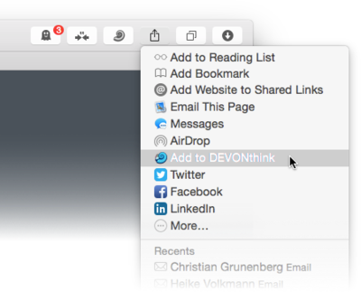

|
|
|
Extensions and bookmarklets |
|
DEVONthink Pro Office provides a sharing extension (requires OS X Yosemite or later), a web browser extension, as well as bookmarklets for conveniently clipping information from other applications into your DEVONthink Pro Office database.
Installation The sharing extension is automatically available in all applications that support it as soon as DEVONthink Pro Office is installed. You may need to activate it using the More option in the sharing menu.  Install the Clip to DEVONthink extension for Safari, Firefox, and Chrome from within DEVONthink Pro Office with the menu command DEVONthink Pro Office > Install Add-Ons. You may need to activate it from your browser's preferences or extension settings. To install bookmarklets, visit our Downoad Extras web page with your preferred browser. Drag a bookmarklet from the page to your web browser's bookmarks, preferably the bookmark bar. You can organize the bookmarklets like any other bookmarks, but placing them into the bookmark bar keeps them handy at all times. Using the extensions Regardless whether you use the sharing extension from an application's sharing menu, the Clip to DEVONthink browser extension, or the Clip to DEVONthink bookmarklet, DEVONthink Pro Office presents you with the following window:
The Clip to DEVONthink bookmarklet or extension is often the best choice as it uses a special panel in DEVONthink Pro Office that lets you enter a title along with a note and tags, and lets you choose in which format you want to save the clipped data. The note is either saved as a plain or rich text document, formatted note, or is, in the case of a bookmark, HTML document, web archive, or PDF, placed into the comments field of the created document. The Clip to DEVONthink panel checks if the web page address you're going to add already exists in your open databases. If it does it shows a little DEVONthink Pro Office icon next to the destination popup menu. Clicking the icon reveals the first found item with this URL. Check Reformat with Instapaper to reformat the text of the page using Instapaper. The New Group button creates a new group in the destination group selected above.
Using the bookmarklets To use one of the other bookmarklets, load any page that you wish to archive or clip text from in your web browser. When the page is fully shown, select the bookmarklet in your bookmarks bar. Instead of loading another page as normal bookmarks do, the bookmarklet adds the selected text or the whole page as text, bookmark, HTML code, web archive, or PDF to DEVONthink Pro Office's default destination. |